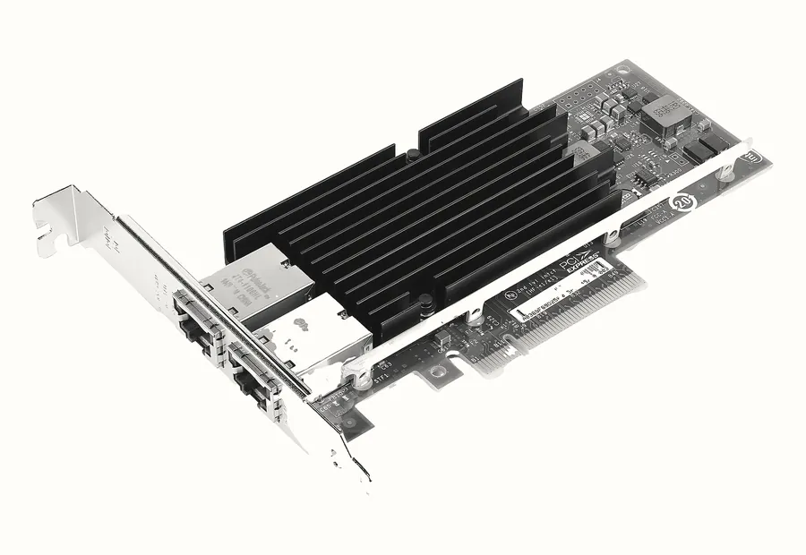
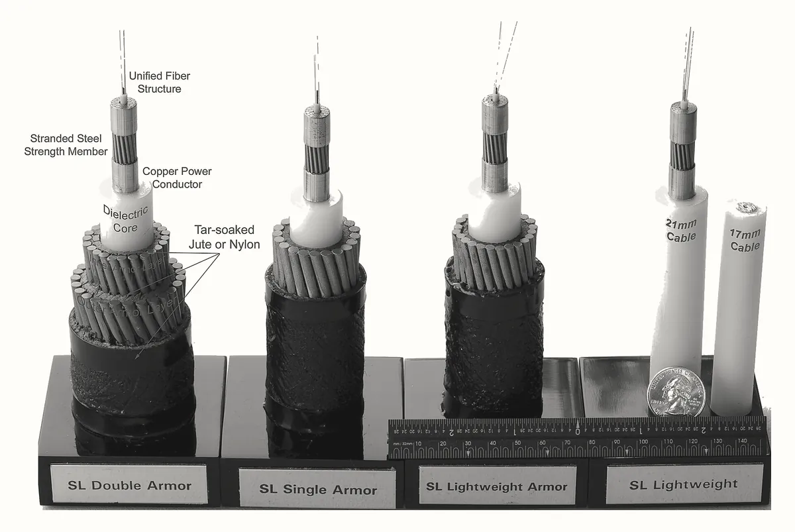
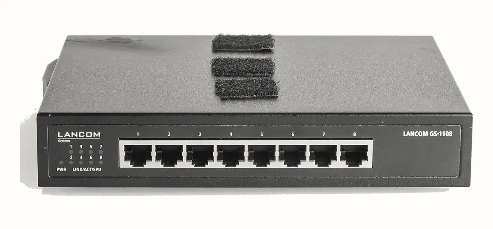
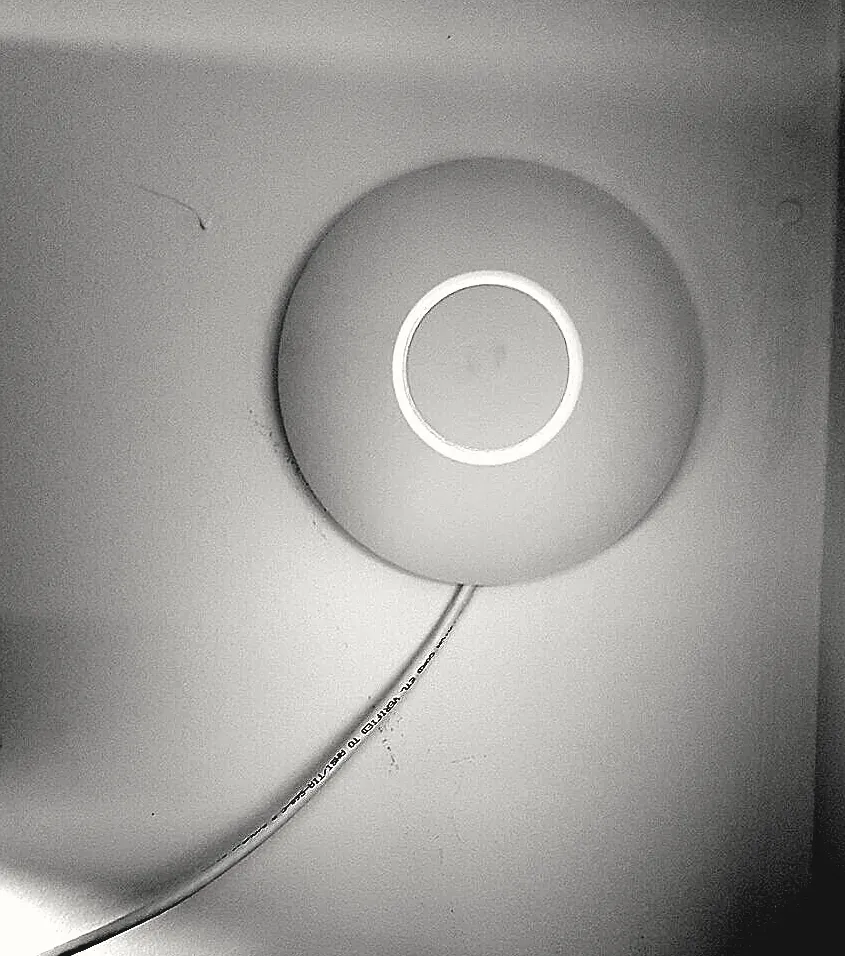
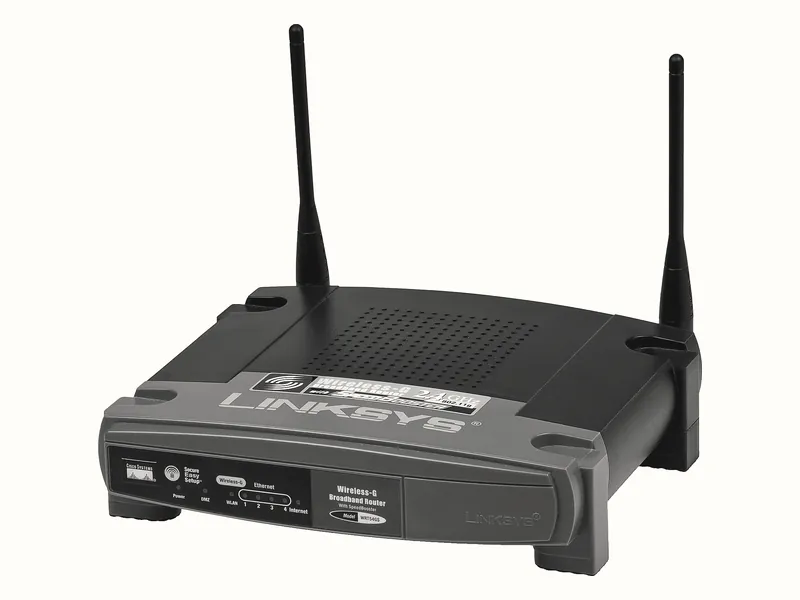

một cú like
phía sau trình duyệt có gì
Phía sau một cú like
Bạn bấm like một bài trên facebook.com thì trên màn hình chỉ thấy cái nút đổi màu. Phía sau, cú bấm ấy rời máy bạn, đi qua cục phát WiFi trong nhà và hơn chục thiết bị chuyển tiếp của nhà mạng rồi mới tới server của Facebook, và server gửi câu trả lời đi ngược về. Mỗi lần dữ liệu được chuyển từ thiết bị này sang thiết bị kế tiếp gọi là một chặng. Từ laptop của mình tới facebook.com là 14 chặng, và ở phần Lab bạn sẽ tự dò được đường đi ấy.
Chia việc thành tầng
Đưa cú like đi xa như vậy cần nhiều việc, nên người ta chia việc ra từng phần, giống bạn tách app Spring Boot thành controller, service và repository. Mỗi phần việc gọi là một tầng (layer). Tầng nào cũng chỉ lo phần của mình, phần còn lại nhờ tầng ngay dưới làm, nên trình duyệt không cần biết máy bạn đang dùng WiFi hay cắm dây mạng.
Khác với app, các tầng của mạng thì máy nào cũng có một bộ riêng, và hai máy không gọi hàm sang nhau được. Vì thế mỗi tầng ở máy gửi ghi điều cần báo vào một phần đầu gắn trước dữ liệu, rồi tầng cùng loại ở máy nhận đọc phần đầu ấy.
Bảy tầng của mô hình OSI
Cách chia được dạy nhiều nhất có bảy tầng, gọi là mô hình OSI (Open Systems Interconnection), do ISO, tổ chức tiêu chuẩn quốc tế, công bố năm 1984. Hình 1 trích bảy tầng ấy từ X.200, bản tải miễn phí của .
The Reference Model contains seven layers:
a) the Application Layer (layer 7);
b) the Presentation Layer (layer 6);
c) the Session Layer (layer 5);
d) the Transport Layer (layer 4);
e) the Network Layer (layer 3);
f) the Data Link Layer (layer 2); and
g) the Physical Layer (layer 1).
Người làm mạng, làm server hay gọi tầng theo số, kiểu "lỗi tầng 7" hay " tầng 4". Bài này đi từ tầng 1 lên, vì tầng nào cũng giải quyết một chuyện mà tầng ngay dưới nó không lo tới.
tầng
12chở bit, tới thiết bị kế bên
Tầng 1 Physical: chở số 0 và 1
Máy tính chỉ làm việc với số 0 và số 1, mỗi số gọi là một bit. Tầng 1 biến bit thành tín hiệu đi được trong thế giới thật: sóng radio nếu bạn dùng WiFi, xung điện nếu cắm dây mạng, xung ánh sáng nếu đi trong cáp quang. Thiết bị làm việc này trong máy bạn là card mạng.

Ra khỏi nhà, dữ liệu thường đi trong cáp quang, kể cả cáp đặt dưới đáy biển nối các châu lục như ở Ảnh 2.

Tầng 1 chỉ lo chở, không lo bit tới máy nào. Laptop, điện thoại và TV trong nhà cùng bắt một sóng WiFi, vậy bit phát ra thì máy nào nhận?
Tầng 2 Data Link: tới thiết bị kế bên
Card mạng nào cũng có một địa chỉ riêng gắn từ lúc sản xuất, gọi là địa chỉ MAC, viết thành sáu cặp ký
tự , như 20-0B-74-xx-xx-xx trên máy mình. Tầng 2
ghi MAC gửi và MAC nhận vào một phần đầu gắn trước dữ liệu, mình gọi là vỏ MAC, và máy nào thấy MAC nhận không phải của nó
thì bỏ qua. Dữ liệu đã có vỏ MAC gọi là frame (khung).
Trong nhà, frame được chuyển tới máy mang MAC nhận nhờ switch, cái hộp có nhiều cổng cắm dây mạng và nhớ máy nào cắm ở cổng nào, hoặc nhờ access point, điểm phát sóng cho máy dùng WiFi. Cục phát WiFi trong nhà thường gộp cả hai vào một hộp.


Switch và access point chỉ biết MAC của các máy trong cùng một mạng, như các máy trong nhà bạn. Server của Facebook nằm ở mạng khác, nên muốn đi xa thì cần thêm tầng 3.
tầng
34đi xa, tới đúng chương trình
Tầng 3 Network: đi qua nhiều mạng tới đúng máy
Tầng 3 cho mỗi máy một địa chỉ cấp theo mạng mà máy đang nối vào, gọi là địa chỉ IP, nên nhìn địa chỉ là
biết phải gửi về hướng nào; facebook.com có địa chỉ 57.144.64.1. Tầng 3 ghi IP gửi và IP nhận vào một phần đầu,
và dữ liệu đã có phần đầu này gọi là gói tin (packet).
Thiết bị nối các mạng với nhau gọi là router. Router đọc IP nhận rồi chuyển gói sang mạng gần đích hơn. Cục phát WiFi là router đầu tiên trên đường đi, và từ laptop của mình tới facebook.com có 13 router như thế.

Vì vậy trên đường đi, IP nhận giữ nguyên, còn vỏ MAC thay ở mỗi chặng. Tới mỗi router, vỏ MAC cũ bị bóc ra, router đọc IP để chọn hướng, rồi bọc một vỏ MAC mới ghi địa chỉ của thiết bị kế tiếp.
Gói tới server rồi, nhưng server chạy nhiều chương trình cùng lúc, vậy gói này giao cho chương trình nào?
Tầng 4 Transport: tới đúng chương trình, đủ và đúng thứ tự
Tầng 4 cho mỗi chương trình đang chờ nhận dữ liệu một con số riêng, gọi là port. App Spring Boot của
bạn chạy ở localhost:8080 thì có port 8080, còn trang https:// như facebook.com dùng port 443.
Mạng chở từng gói nhỏ, thường tối đa 1.500 byte một gói, và gói có thể mất hay tới nơi lộn thứ tự. TCP (Transmission Control Protocol) lo chuyện ấy: TCP cắt dữ liệu thành từng mẩu, đánh số các mẩu, gửi lại mẩu bị mất và ráp các mẩu lại theo thứ tự ở đầu kia. Số thứ tự và port được ghi vào phần đầu TCP. Trước khi gửi, TCP ở hai máy trao đổi vài gói để mở một kết nối, và kết nối còn giữ cho tới khi một bên đóng lại.
UDP cũng dùng port nhưng không mở kết nối và không gửi lại gói mất, nên hợp với những câu hỏi đáp gọn trong một gói, như câu hỏi DNS mà bạn sẽ gặp ở tầng 7.
tầng
567phần của chương trình
Ba tầng trên nằm trong chương trình ở hai đầu, tức trình duyệt của bạn và chương trình của Facebook trên server. Router ở giữa không đụng tới ba tầng này.
Tầng 5 Session: giữ cuộc trao đổi
Tầng 5 lo mở, giữ và đóng một cuộc trao đổi kéo dài qua nhiều lần hỏi đáp giữa hai chương trình. Ngoài đời, việc này nằm rải trong trình duyệt và app. Chuyện mở lại tab mà vẫn đăng nhập thì do cookie lo, và cookie là việc của tầng 7.
Tầng 6 Presentation: hai đầu hiểu dữ liệu như nhau
Tầng 6 lo cho hai đầu biểu diễn dữ liệu theo cùng một kiểu, ví dụ dùng chung một bảng mã cho chữ tiếng Việt có dấu. Việc
mã hoá cũng hay được xếp vào tầng này. Chữ s trong https nghĩa là request được mã hoá bằng
TLS (Transport Layer Security) trước khi rời máy bạn. TLS chỉ mã hoá request, còn phần đầu IP và phần đầu
TCP để nguyên, nên router vẫn đọc được địa chỉ để chuyển gói mà không đọc được request.
Tầng 7 Application: viết ra request like
Tầng 7 là nơi cú like được viết ra, thành một request theo giao thức HTTP (Hypertext Transfer Protocol),
giống request mà controller có @PostMapping của bạn vẫn nhận. Request thật của Facebook mình không xem được,
nên Hình 3 chỉ là dạng chung của request ấy.
POST /<đường dẫn của Facebook> HTTP/1.1
Host: www.facebook.com
Content-Type: application/json
Cookie: <phiên đăng nhập của bạn>
{"postId": "123456", "action": "like"}Trước khi gửi request, trình duyệt phải hỏi DNS (Domain Name System) để đổi tên
www.facebook.com thành địa chỉ IP, vì tầng 3 cần địa chỉ chứ không cần tên.
đường đi
7654321đi xuống, đi qua, đi lên
Đi xuống: bọc thêm từng lớp
Lúc bạn bấm like, request đi từ tầng 7 xuống tầng 1. Mỗi lớp nhận khối byte từ phía trên, không đọc bên trong mà gắn thêm phần đầu của mình rồi giao xuống; TLS còn mã hoá khối byte, TCP còn cắt khối byte thành mẩu. Việc gắn chồng từng lớp như vậy gọi là encapsulation (đóng gói).
POST ... likeHost: www.facebook.comtầng 7gắn sau cùng, bóc đầu tiên
viết đầu tiên, đọc sau cùng
Đi qua rồi đi lên
Tín hiệu đi qua cục phát WiFi và các router rồi tới server. Ở server, dữ liệu đi ngược từ tầng 1 lên tầng 7, mỗi tầng bóc phần của mình, và cuối cùng chương trình của Facebook đọc được request like. Câu trả lời đi về theo chiều ngược lại.
máy bạn, đi xuống
server của Facebook, đi lên
Router chỉ mở tới tầng 3
Router chỉ cần ba tầng dưới, vì để chọn hướng nó chỉ đọc IP nhận (Hình 6). Bốn tầng trên chỉ có ở máy bạn và server, nên router không đọc tới request like, và nhờ TLS thì có muốn đọc cũng không được.
máy bạn
router
server
Biết tầng để làm gì
Gặp lỗi mạng, câu hỏi đầu tiên là hỏng ở tầng nào, vì mỗi tầng hỏng một kiểu. Bảng 1 xếp vài lỗi hay gặp theo tầng, và các lệnh ở cột cuối bạn sẽ chạy ở phần Lab.
| Triệu chứng | Tầng | Bên viết ra thông báo | Kiểm tra bằng |
|---|---|---|---|
| Biểu tượng mạng bị gạch chéo, không bắt được WiFi | 1, 2 | hệ điều hành | xem lại WiFi, dây mạng |
Lệnh dò đường dừng ở một router, các router sau không trả lời (tracert in dấu sao) | 3 | tracert | tracert, lệnh dò các router trên đường đi |
Connection refused: không có chương trình nào chờ nhận kết nối ở port đó | 4 | curl in ra, sau khi máy đích từ chối | curl -v, lệnh gửi request HTTP rồi kể lại từng bước |
| Trình duyệt báo chứng chỉ không hợp lệ hoặc hết hạn (chứng chỉ là giấy tờ server đưa ra để chứng minh nó là trang bạn muốn vào) | 6 (TLS) | trình duyệt | curl -v |
Non-existent domain | 7 (DNS) | nslookup in ra, khi server DNS báo tên không tồn tại | nslookup, lệnh hỏi DNS |
Could not resolve host | 7, hoặc 1 tới 3 nếu máy mất mạng | curl in ra, khi không đổi được tên thành địa chỉ | nslookup |
lab
xem từng tầng trên máy bạn
Các lệnh dưới chạy trong Git Bash, cửa sổ dòng lệnh đi kèm khi cài Git for Windows. Output là của máy mình ngày 30/10/2026, riêng bước đầu của Lab 5 chạy ngày 13/11/2026; máy bạn sẽ ra địa chỉ khác nhưng cách đọc vẫn vậy.
# Lab 1: tầng 2, địa chỉ MAC của các card mạng
getmac
# Lab 2: tầng 3, dò chuỗi router tới facebook.com
tracert -d facebook.com
# Lab 3: tầng 7, hỏi DNS
nslookup facebook.com
# Lab 4: tầng 4 và tầng 7 trong một lần gọi
curl -v -o /dev/null https://www.facebook.com/
# Lab 5: tự gây lỗi
nslookup this-name-does-not-exist-12345.comLab 1: tầng 2, địa chỉ MAC
$ getmac
Physical Address Transport Name
=================== ===========================================
00-FF-78-xx-xx-xx \Device\Tcpip_{...}
E8-9C-25-xx-xx-xx Media disconnected
20-0B-74-xx-xx-xx \Device\Tcpip_{...}Cột trái là địa chỉ MAC của từng card mạng. Windows gọi cột này là Physical Address, nhưng MAC vẫn thuộc tầng 2. Dòng cuối
là card WiFi đang dùng, dòng giữa ghi Media disconnected là card đang không nối mạng, còn dòng đầu theo mình đoán
là card ảo do phần mềm tạo ra.
Lab 2: tầng 3, dò chuỗi router
tracert liệt kê các router mà gói tin đi qua, còn cờ -d bảo lệnh đừng đổi địa chỉ IP thành tên.
Mình đã ẩn địa chỉ các router của nhà mạng.
- 1192.168.10.333 ms · 1 ms · 1 ms
- 2192.168.1.11 ms · 1 ms · 1 ms
- 3(router nhà mạng, đã ẩn)2 ms · 4 ms · 2 ms
- 4(router nhà mạng, đã ẩn)21 ms · 2 ms · 2 ms
- 5(router nhà mạng, đã ẩn)9 ms · 2 ms · 2 ms
- 6Request timed out.* · * · *
- 7(router nhà mạng, đã ẩn)4 ms · 2 ms · 2 ms
- 8(router nhà mạng, đã ẩn)9 ms · 3 ms · 4 ms
- 9(router nhà mạng, đã ẩn)70 ms · 53 ms · 102 ms
- 10157.240.68.6625 ms · 89 ms · 30 ms
- 11147.75.211.10120 ms · * · 27 ms
- 12129.134.62.49129 ms · 101 ms · 110 ms
- 13129.134.95.21820 ms · 21 ms · 22 ms
- 1457.144.64.119 ms · 19 ms · 19 ms
output nguyên văn
$ tracert -d facebook.com
Tracing route to facebook.com [57.144.64.1]
over a maximum of 30 hops:
1 3 ms 1 ms 1 ms 192.168.10.33
2 1 ms 1 ms 1 ms 192.168.1.1
3 2 ms 4 ms 2 ms (router nhà mạng, đã ẩn)
4 21 ms 2 ms 2 ms (router nhà mạng, đã ẩn)
5 9 ms 2 ms 2 ms (router nhà mạng, đã ẩn)
6 * * * Request timed out.
7 4 ms 2 ms 2 ms (router nhà mạng, đã ẩn)
8 9 ms 3 ms 4 ms (router nhà mạng, đã ẩn)
9 70 ms 53 ms 102 ms (router nhà mạng, đã ẩn)
10 25 ms 89 ms 30 ms 157.240.68.66
11 120 ms * 27 ms 147.75.211.10
12 129 ms 101 ms 110 ms 129.134.62.49
13 20 ms 21 ms 22 ms 129.134.95.218
14 19 ms 19 ms 19 ms 57.144.64.1
Trace complete.Dòng 1 là cục phát WiFi, dòng 2 theo mình đoán là của
nhà mạng, và cả hai có địa chỉ 192.168..., loại địa chỉ chỉ dùng trong mạng nhà. Dòng 6 toàn dấu sao là router
không trả lời lệnh dò, chứ gói không mất ở đó, vì các dòng sau vẫn có kết quả. Dòng 14 là facebook.com.
Lab 3: tầng 7, hỏi DNS
$ nslookup facebook.com
Server: (tên router, đã ẩn)
Address: fe80::10
Non-authoritative answer:
Name: facebook.com
Addresses: 2a03:2880:f31a:1:face:b00c:0:25de
57.144.64.1Khối trên là bên trả lời, theo mình đoán là cục phát WiFi đi hỏi hộ, nên có dòng Non-authoritative answer.
Khối dưới là hai địa chỉ của facebook.com: 57.144.64.1 là địa chỉ IPv4 như ở tầng 3, còn dòng dài là địa chỉ
kiểu mới, IPv6.
Lab 4: tầng 4 và tầng 7 trong một lần gọi
curl gửi request HTTP từ dòng lệnh. Cờ -v bảo curl kể lại từng bước, còn -o /dev/null
bỏ nội dung trang đi.
* Host www.facebook.com:443 was resolved.
* IPv6: (none)
* IPv4: 57.145.12.1
* Trying 57.145.12.1:443...
* schannel: disabled automatic use of client certificate
* Connected to www.facebook.com (57.145.12.1) port 443
> GET / HTTP/1.1
> Host: www.facebook.com
> User-Agent: curl/8.10.1
* schannel: remote party requests renegotiation
* schannel: renegotiating SSL/TLS connection
* schannel: SSL/TLS connection renegotiated
< HTTP/1.1 200 OKcurl -v ngày 30/10/2026, đã lược bớt header. Dòng * là lời curl
tự kể, > là dữ liệu gửi đi, < là dữ liệu nhận về.Ba dòng đầu là DNS ở tầng 7 trả về địa chỉ của www.facebook.com, khác địa chỉ ở Lab 3 vì đây là một tên khác.
Dòng Connected ... port 443 là TCP ở tầng 4 mở xong kết nối. Sau đó GET đi ra và
200 OK trở về ở tầng 7. Bước bắt tay TLS không hiện ra, vì bản curl của Git for Windows dùng thư viện schannel
của Windows để mã hoá, mà schannel gần như không báo lại gì; mấy dòng schannel bạn bỏ qua được.
Lab 5: tự gây lỗi
Bước đầu, hỏi DNS một cái tên chưa ai đăng ký.
$ nslookup this-name-does-not-exist-12345.com
*** (tên router, đã ẩn) can't find this-name-does-not-exist-12345.com: Non-existent domainServer DNS vẫn trả lời được, tức mạng vẫn chạy, chỉ có cái tên là không tồn tại, nên đây là lỗi ở tầng 7.
Bước thứ hai, tắt WiFi rồi chạy lại Lab 4. Nếu curl vẫn ra địa chỉ thì chạy ipconfig //flushdns để xoá bộ nhớ
tạm DNS của Windows (Git Bash cần hai dấu gạch chéo). Mình chưa chạy bước này, nên output dưới là output mình đoán sẽ
ra.
$ curl -v -o /dev/null https://www.facebook.com/
* Could not resolve host: www.facebook.com
curl: (6) Could not resolve host: www.facebook.comHỏng ở tầng 1 và 2 mà thông báo lại nói về DNS, vì việc đầu tiên curl làm là hỏi DNS. Muốn phân biệt tên không tồn tại với máy mất mạng thì chạy Lab 3. Xong thì bật WiFi lại.
tự kiểm tra
tự kiểm tra và nguồn đọc thêm
Tự kiểm tra
Đánh dấu từng dòng khi bạn tự trả lời được mà không nhìn lại bài, bằng lời của bạn và kèm một ví dụ.
- Kể được bảy tầng từ dưới lên, và tầng 1 tới 4 mỗi tầng lo việc gì
- Nói được vì sao chia việc thành tầng, và so sánh được với việc tách controller, service, repository
- Chỉ ra được địa chỉ MAC, địa chỉ IP và port lần lượt thuộc tầng nào
- Giải thích được vì sao trên đường tới server, IP nhận giữ nguyên còn vỏ MAC đổi ở mỗi chặng
- Kể được thứ tự các lớp được gắn vào request like lúc đi xuống, và thứ tự các lớp được bóc ra ở server
- Nói được router đọc tới tầng mấy, và vì sao router không biết bạn vừa bấm like
- Đọc được output của
curl -vvà chỉ ra dòng nào thuộc tầng nào - Giải thích được vì sao mất WiFi mà curl lại báo
Could not resolve host
Nguồn đọc thêm
- ITU-T X.200 (07/1994), Information technology, Open Systems Interconnection, Basic Reference Model: The basic model. Văn bản chuẩn của mô hình OSI, tải miễn phí; bảy tầng ở mục 6.1.2. itu.int/rec/T-REC-X.200-199407-I
- ISO/IEC 7498-1:1994, cùng nội dung với X.200, do ISO phát hành. iso.org/standard/20269.html
- RFC 9110, HTTP Semantics. rfc-editor.org/rfc/rfc9110
- RFC 8446, The Transport Layer Security (TLS) Protocol Version 1.3. rfc-editor.org/rfc/rfc8446
- RFC 9293, Transmission Control Protocol (TCP). rfc-editor.org/rfc/rfc9293
- RFC 791, Internet Protocol. rfc-editor.org/rfc/rfc791
- RFC 1035, Domain Names, Implementation and Specification. rfc-editor.org/rfc/rfc1035
- Microsoft, trang hướng dẫn lệnh
tracert. learn.microsoft.com/…/windows-commands/tracert - curl, trang hướng dẫn chính thức. curl.se/docs/manpage.html